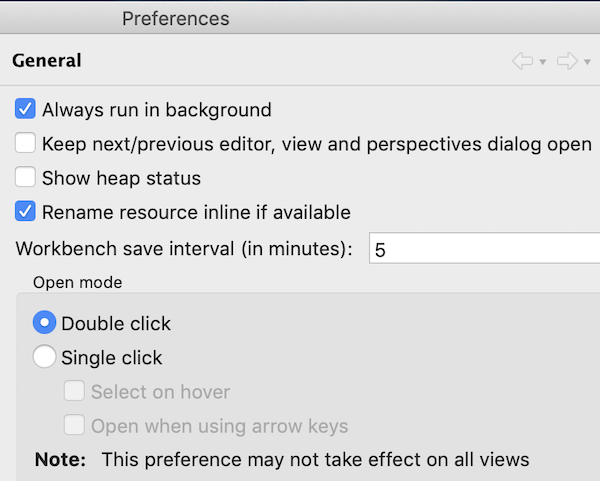
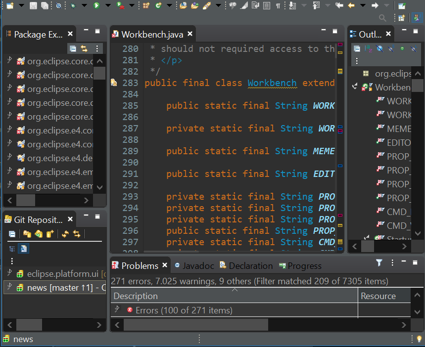

Views, Dialogs and Toolbar

Text Editors
Preferences



Themes and Styling

General Updates

It is now possible to enable this feature separately for keyboard interaction and mouse clicks. So you can enable it for mouse clicks only, for keyboard interaction only or for both. Enabling this only for mouse clicks is very helpful for users who want to learn existing key bindings.
You can enable this on the Preferences dialog via the Show key binding when command is invoked group on the General > Keys preference page. To change this setting quickly the command 'Toggle Show Key Bindings' can be used (e.g. via the find actions dialog).